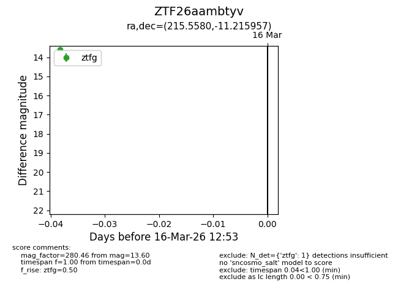
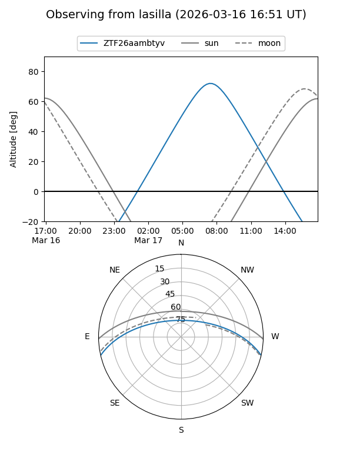
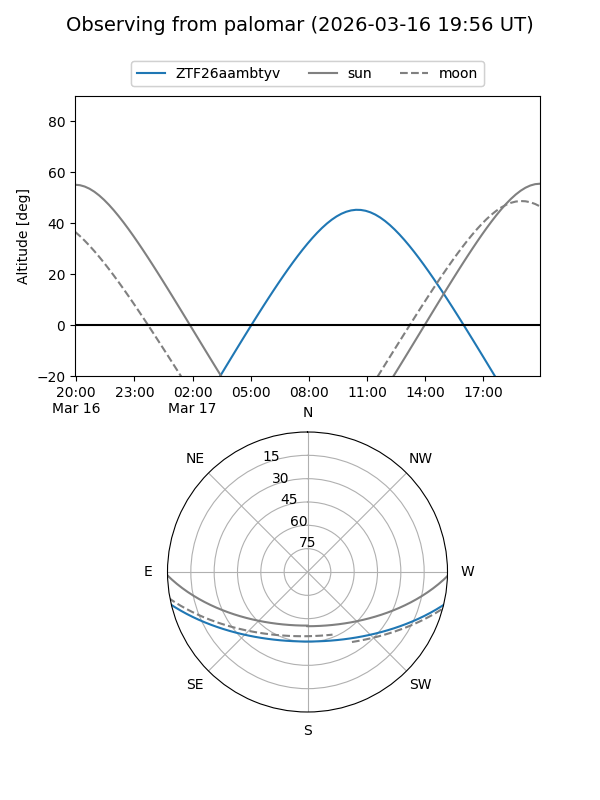

ZTF26aambtyv
Target ZTF26aambtyv at 2026-03-16 12:55
Aliases and brokers:
FINK: link
Lasair: link
ALeRCE: link
alt names
ZTF26aambtyv (ztf,fink_ztf)
Coordinates:
equatorial (ra, dec) = 215.5580,-11.21596
equatorial (HMS+DMS) = 14:22:13.91,-11:12:57.44
galactic (l, b) = (335.8028,+45.78132)
Flags:
Photometry:
last ztfg=13.60
1 ztfg detections
Lightcurve

Visibility


Additional plots